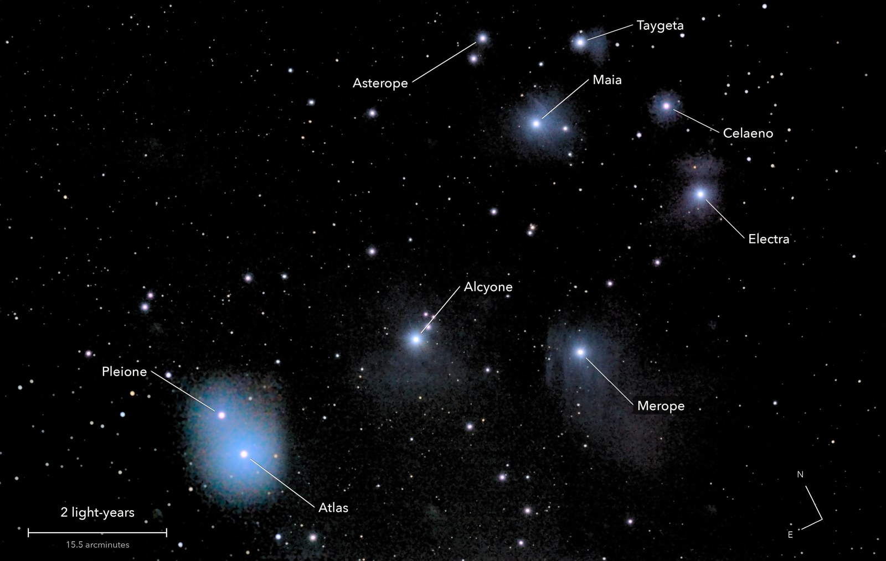
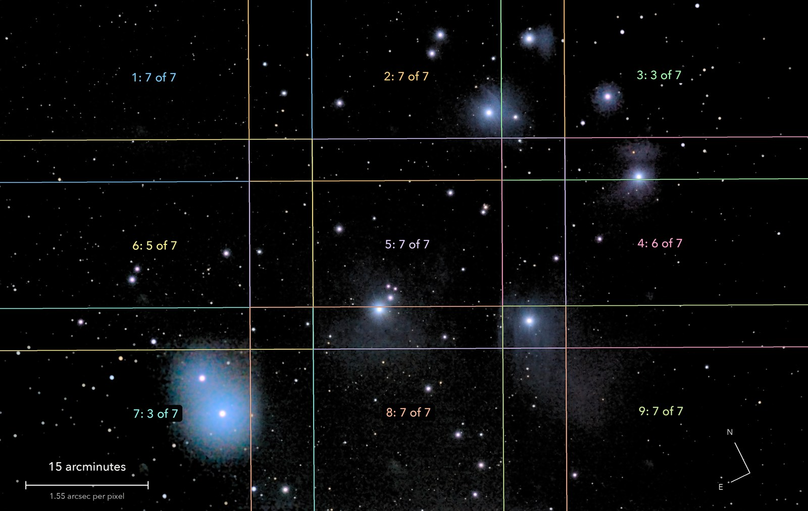

The Pleiades
Messier 45, the Seven Sisters
A family of about a thousand young stars, born together some 100 million years ago. The blue haze round Merope and Maia is a dust cloud they are drifting through, lit by their light.
What you are looking at

Swipe sideways to see the rest. Tap the picture for full size.
- Distance
- 444 light-years
- This picture spans
- 13 light-years
- The light left
- In 1582, the year the modern calendar began
- Honest note
- The glow round Atlas and Pleione is thin cloud that night, not nebula
For photographers
A 3 x 3 mosaic; each outline is one sensor frame, with frames kept of frames taken.

Swipe sideways to see the rest. Tap the picture for full size.
- Exposures
- 10 s at ISO 1600, about 7 frames per panel: one minute each
- Frames
- 72 taken, 60 kept: 10 minutes in all. Panels 3 and 7 were shot through cloud and only fill where clear panels have no data
- Mosaic
- Each panel centred to 0.6 arcmin by plate solve and a local nudge. Placed by its own plate solution (shared stars agree to 0.5 arcsec); one brightness scale and one constant per panel; feathered
- Sampling
- 1.553 arcsec per pixel. Stars about 5 arcsec wide; the bright ones are saturated and left white
- Field
- 99 x 63 arcmin, cropped level from the mosaic; one frame is 38.8 x 25.8
- When
- 4 October 2026, before dawn, over 49 minutes. 74 degrees up, 41 percent Moon in the sky
- What is real
- The haze at Merope and Maia repeats between independent stacks at 4 to 11 sigma. The glow at Atlas and Pleione is cloud
- Calibration
- Flat and dust map from tonight's clouded frames; a faint sensor pattern common to all panels removed. No darks
- Finish
- Black 24 of 255, gamma 0.95. Saturation x 1.45. Dark sky made neutral and smoothed (median 5 px, then bilateral 5 px): faint haze traded for a quiet sky
- Telescope
- Celestron 8SE Schmidt-Cassegrain with dew shield: 203 mm aperture, 2,084 mm focal length (measured by plate solve), f/10.3
- Camera
- Sony a6000, stock, at prime focus: APS-C 23.5 x 15.6 mm, 6000 x 4000, 3.9 micron pixels, RAW
- Mount
- Sky-Watcher EQ6-R, unguided. Set down 27 degrees off the pole; both axes driven from a pointing model fitted to plate solves. Residual drift about 0.1 arcsec per second
© 2026 Brad Gessler · Celestron 8SE (8 inch, 2,080 mm) and Sony a6000 on an EQ6-R · San Francisco Bay Area · 4 October 2026
Capture and mount: Observatory (Elixir on a Raspberry Pi 3). Stacking: numpy, OpenCV, rawpy. Plate solving: astrometry.net. Stacked from the camera's RAW frames. Nothing generated.
© 2026 Brad Gessler. The pictures and the words are his own; all rights reserved.